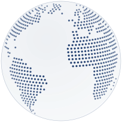
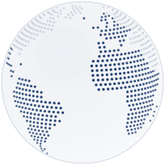

AS
Abdou Samb
Ingeniero y matemático senegalés, presidente de FRS Consulting en París, asesor de la Comisión Europea sobre la transformación digital. Nombrado «Africano del año 2025» en los Mission Africa Awards.
Democracy Together es una iniciativa plurinacional: una red mundial de think tanks, abierta a los jóvenes y atenta a África y a Europa.
Entendida como respetuosa de las libertades, del Estado y de las reglas de derecho, lo está en Francia, en muchos otros países y en la comunidad internacional.
Hoy hay que defender la democracia liberal, pero también preparar su evolución, si no su refundación.
Varios think tanks dedicados a la democracia ya trabajan en este sentido. Pero muchos actúan de forma demasiado aislada y centrada en los problemas del mundo occidental: su impacto se reduce, y las problemáticas de los países emergentes quedan minimizadas.
02
Estamos convencidos de que hay lugar para una iniciativa plurinacional basada en una red de think tanks. La hemos llamado Democracy Together.
La red les abre un espacio y busca movilizarlos.

Reúne a países desarrollados y países emergentes.

Tres anclajes sólidos en una red pensada para llegar a todos los continentes.
Nuestra apuesta: una inteligencia democrática colectiva, para responder a los desafíos mundiales presentes y futuros, en el marco del restablecimiento de un orden internacional respetuoso y respetado.
03
Fomentando un ecosistema inclusivo, donde las ideas innovadoras contribuyan a sociedades más resilientes y más equitativas.
Cuestiones institucionales y de vida democrática, que se plantean de forma distinta según los países:
Las contribuciones recogidas están llamadas también a convertirse en objetos de investigación, para el mundo académico y más allá.
04
Así construiremos esta inteligencia colectiva: mediante el intercambio y la puesta en común de contribuciones breves.
Breves
De 500 a 1200 palabras
Se esperan muchas contribuciones, y una idea pertinente y bien pensada siempre puede expresarse de forma concisa.
De calidad
La calidad se controla, para favorecer las ideas más significativas, más útiles y más innovadoras.
Evaluadas
por pares
¿Quién juzga la calidad? ¡Nosotros no!
Pares designados por los propios autores. Es una de las singularidades de nuestra iniciativa.
05
Bilingüe, pronto multilingüe, KOHOP publicará las contribuciones de los miembros. Su principio: el juicio por pares, como en una revista científica.
De 500 a 1200 palabras, con enlaces a textos más extensos, disponibles en un clic.
Se necesitan al menos dos. Sin anonimato: sus nombres y sus análisis se publican junto con su texto.
Puede recusar a un revisor demasiado cercano al autor, por ejemplo un coautor.
2 semanas
Recibe las críticas y decide si las tiene en cuenta o no.
Acepta o rechaza la publicación. Dos dictámenes favorables equivalen casi automáticamente a la aceptación, salvo exceso evidente o infracción de la carta.
Una apuesta por la honestidad intelectual y la transparencia.
06
Ingeniero y matemático senegalés, presidente de FRS Consulting en París, asesor de la Comisión Europea sobre la transformación digital. Nombrado «Africano del año 2025» en los Mission Africa Awards.
Biólogo francés, profesor honorario del Collège de France, antiguo director del Instituto Pasteur, miembro de la Academia de Ciencias de Francia. Autor de más de 350 publicaciones científicas y de una decena de libros, varios de ellos sobre la democracia.
Diplomático francés, antiguo embajador de Francia en Estados Unidos, antiguo secretario general ejecutivo del Servicio Europeo de Acción Exterior, senior fellow del Carnegie Endowment for International Peace.
Secretaria general de la asociación: Armelle Chapalain
Las cuotas de los miembros, donaciones, subvenciones de instituciones como la Unión Europea y alianzas seleccionadas con empresas comprometidas con la RSC. Se creará un fondo dedicado a los proyectos colaborativos, y la asociación se dotará de indicadores de rendimiento.
07
Toda institución con una actividad de think tank puede adherirse, aunque desarrolle otras, de formación por ejemplo. La adhesión pasa por la firma de una breve carta.
Escríbanos
contact@democracy-together.org
Asociación sin ánimo de lucro (ley francesa de 1901) · Sede en París